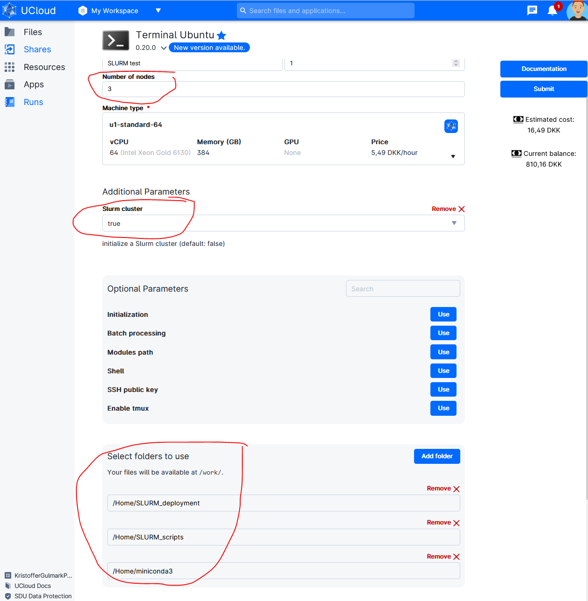
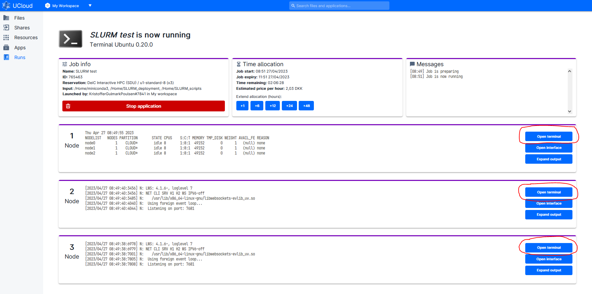
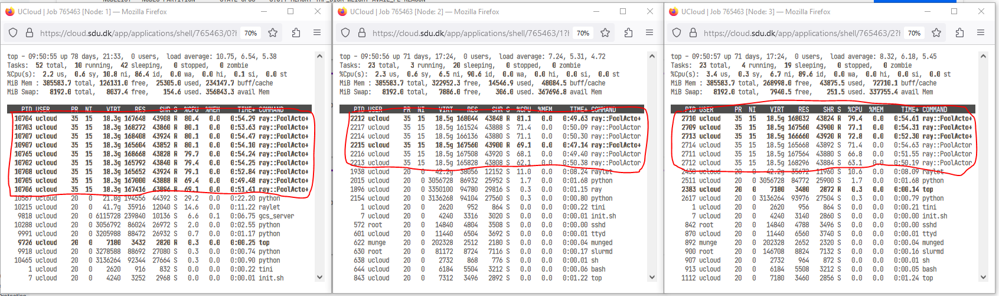

UCloud Tutorial: Run Multi-node SLURM Cluster on UCloud
Launch a "Terminal App" UCloud Job
In addition to the normal setting fill out the following options (See figure below).
In this example launched as cluster consisting of 3 nodes with three folder added to the launch:
- "miniconda3" - contains the conda environment I want to deploy across the different nodes.
- "SLURM_deployment" - contains the easy-to-use deployment scripts provided in this tutorial.
- "SLURM_scripts" - contains the user specific script and data to run on the cluster.
In this example Conda is used for package and evironment management. Check here for more information on Conda on UCloud.

When the job has started open Terminal for Node 1

Run following commands in the terminal:
# activate SLURM Cluster if not activated in the step above
init_slurm_cluster
# List Avaliable nodes
sinfo -N -l
The controller node is always the first node. Called "node0" in within SLURM but called "Node 1" in the UCloud interface). All additional nodes are named sequentially. For example, a cluster consisting of three full u1-standard nodes is configured as follows:
NODELIST NODES PARTITION STATE CPUS S:C:T MEMORY
node0 1 CLOUD* idle 64 1:64:1 385024
node1 1 CLOUD* idle 64 1:64:1 385024
node2 1 CLOUD* idle 64 1:64:1 385024
But called Node 1, Node 2 and Node 3 in the UCloud interface.
Acitvate Conda Environment
In terminal add conda environment:
# Running a new UCloud run the following lines in the terminal to activate Conda:
sudo ln -s /work/miniconda3/bin/conda /usr/bin/conda
# Init Conda:
conda init && bash -i
# Shows already installed environments:
conda env list
# Activate environment:
conda activate myenv
# Check which environment is in path (e.g. X = python,R..)
which X # (e.g. X = python,R..)
# Output should be:
/work/miniconda3/envs/myenv/bin/X # (e.g. X = python,R..)
SLURM deployment scripts
The SLURM deployment script ("slurm-launch.py") have been adopted from Ray documentation to support the addition of other python libraries (Dask, ipyparallel) and other languages (e.g. R).
slurm-launch.py
"slurm-launch.py" auto-generates SLURM scripts and launch. slurm-launch.py uses an underlying template (e.g. "slurm-template_ray.sh" or "slurm-template_dask.sh") and fills out placeholders given user input.
# Change path:
cd /work/SLURM_deployment
# Python with Ray
python slurm-launch.py --script slurm-template_ray.sh --exp-name SlurmTest --command "python /work/SLURM_scripts/SklearnRay.py" --num-nodes 3
# Python with Dask
python slurm-launch.py --script slurm-template_dask.sh --exp-name SlurmTest --command "python /work/SLURM_scripts/SklearnDask.py" --num-nodes 3 --nprocs 8 --nthreads 1
# R with doParallel
python slurm-launch.py --script slurm-template_R.sh --exp-name SlurmTest --command "Rscript --vanilla /work/SLURM_scripts/doParallel.r" --num-nodes 3 --nprocs 8 --nthreads 1
# Example of Output
Starting to submit job!
Job submitted! Script file is at: <SlurmTest_0425-1208.sh>. Log file is at: <SlurmTest_0425-1208.log>
Submitted batch job 2
Addditionel options
--exp-name # The experiment name. Will generate {exp-name}_{date}-{time}.sh and {exp-name}_{date}-{time}.log.
--command # The command you wish to run. For example: rllib train XXX or python XXX.py.
--node (-w) # The specific nodes you wish to use, in the same form as the output of sinfo. Nodes are automatically assigned if not specified.
--num-nodes (-n) # The number of nodes you wish to use. Default: 1.
--partition (-p): # The partition you wish to use. Default: “”, will use user’s default partition.
--load-env: # The command to setup your environment. For example: module load cuda/10.1. Default: “”.
--nprocs:
--nthreads:
Open extra terminal for the three nodes

Run "top" command is used to show the Linux processes.

Observed that the work is distibuted across all three nodes.
This may look different for different frameworks (e.g. Ray, Dask, R). It should be noted that in this example on 8 core nodes were used. Full nodes (64 cores) will generate alot more processes.
